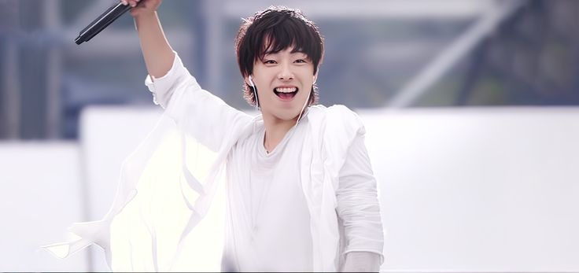

YOSUKE (이케, Vocal)
성종은 테너로 거칠고 허스키한 목소리가 특징으로 유니크한 음색을 소유하고 있다. 강한 성량이나 억양있는 진성 고음의 노래가 특기이다.
SPYAIR 탈퇴 후 솔로 활동을 하다가 혼자 무대에 오르는 것에 한계를 느끼고 역시 밴드 사운드가 좋다며 밴드 TOOKAMI를 결성하였다.
탈퇴 이후 컨디션 문제로 솔로곡은 내지 않고 피처링 위주로 음악 활동을 이어가고 있었으나 2023년 7월부터 '내 페이스대로', '나답게'를 테마로 음악 활동을 다시 시작했다고 한다.
추가로 DJ에 자연스럽게 관심이 생기면서 DJアイク라는 서브캐로 DJ 활동도 하고 있다.
ENZEL☆ (엔젤, DJ)
가입 전에는 스파이에어의 거리 공연을 돕던 사람이었다. 유지와 모미켄의
악기를 대신 받아 주거나 건네주는 테크니션에 가까운 역할이었는데,
그렇게 함께 하다가 밴드에 가입 제의를 받게 되었다고 한다.
2012년 12월 18일 일본 무도관 공연으로 탈퇴하는 것을 표명 후 탈퇴했다.
DJ라고는 하지만 공연에서 하는 게 호응 유도 정도에서 그친다. 녹음에는 거의 참여하지 않는 것으로 보인다.